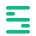

A — Layered S
Buchstabe „S" aus 5 Druckschichten. Sehr clean, funktioniert auch als Favicon im 16 px-Bereich.

Slicekeeper
Slicekeeper
Jeweils in Light + Dark + Lockup mit Wortmarke. Klick auf eine Option im Chat ist genug — ich integriere die gewählte direkt in Header, Favicon und README.
Buchstabe „S" aus 5 Druckschichten. Sehr clean, funktioniert auch als Favicon im 16 px-Bereich.

Schild = „keeper". Drei Layer-Linien plus Punkt = Versionsstände. Etwas erzählerischer.
Wörtlicher „Keeper" = Schlüssel. Schlüsselbart sind versetzte Layer-Stege. Verspielter, gut für Sticker.